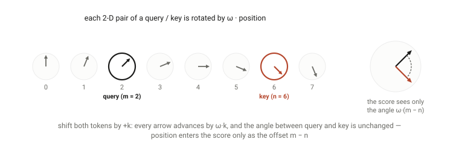
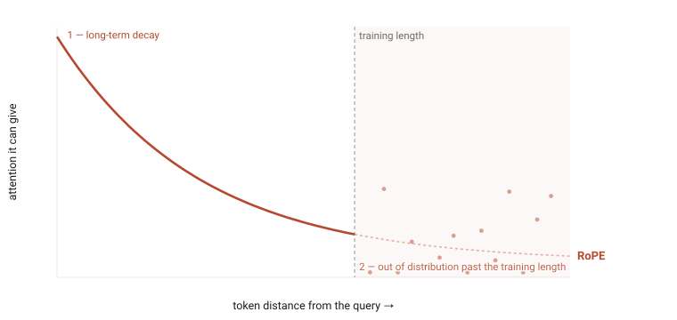
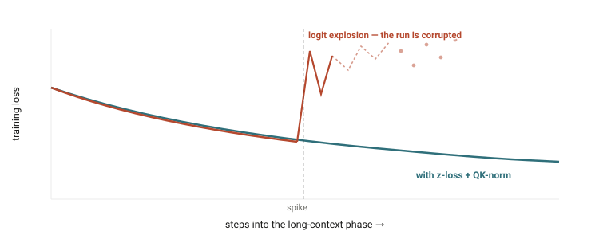

The path to 1M context window
Table of Contents
In 2020 GPT-3 read 2,048 tokens — about three pages. Today's default is a million and the record is ten: a 5,000× stretch in five years that no single trick explains. Here is how it actually happened.
Positional Encoding: RoPE for Local Order, NoPE for Long-Range Reach
Self-attention is order-blind: shuffle the tokens and every attention score is unchanged — "dog bites man" and "man bites dog" read the same. A positional encoding is the signal injected to tell the model where each token sits (Vaswani et al., 2017). The figure below builds one such score from scratch to show why the shuffle changes nothing.
Rotary Position Embedding (RoPE) (Su et al., 2021) rotates every query and key — the vectors just introduced — by an angle proportional to position, so the score between positions m and n depends only on the offset m − n — relative position, at zero parameter cost. Since LLaMA adopted it, RoPE has been effectively universal — Llama, Mistral, Qwen, DeepSeek, and Gemma all use it.

Two properties of the rotation become liabilities at long range: it induces a built-in long-term decay — the expected query–key score falls with distance, suppressing attention to information far back — and its frequencies are calibrated to the training length, so positions beyond it produce out-of-distribution angles. Position Interpolation (Chen et al., 2023) and YaRN (Peng et al., 2023) — applied with a brief continued-pretraining pass — carry most models to 128K and beyond, but they only push the training-length anchor outward. The decay stays: a RoPE model stretched to a million tokens still struggles to attend uniformly across them.

NoPE — no positional encoding — is the complementary construction: a layer applies no rotation and recovers token order from the causal mask alone — the rule that each token can only see the tokens before it (Kazemnejad et al., 2023; Yang et al., 2025). No rotation means no decay and no training-length anchor. Drag the key token below and watch RoPE's pairs dephase and its match fall while NoPE's holds.
The modern recipe combines the two — RoPE on most layers for sharp local order, NoPE layers for the long-range reach — and it is what the longest-context models actually do. Meta's Llama 4 (2025) calls it iRoPE — roughly three RoPE layers for every NoPE layer, trained at 256K and generalizing to 10M tokens — and Hugging Face's fully-open SmolLM3 (2025) publishes weights and recipe for the same pattern; the proprietary 1M models (Gemini, GPT-4.1, Claude) don't disclose theirs but are widely assumed to do something similar. Keep that shape in mind — a minority of layers doing the long-range work — because attention is about to repeat it.
Attention, Rebuilt: Exact Attention Made Survivable
Attention is the mechanism that moves information between positions: each token scores every other token and pulls in from the ones that matter (Vaswani et al., 2017). Compute grows as O(N²), because every token attends to every other; the KV cache — the keys and values kept for every past token to avoid recomputing them — grows as N with a large constant: roughly 40 GB at 128K for Llama 3 70B (Dubey et al., 2024).
Under the hood, each token emits three vectors: a query — what it is looking for — a key — what it can be matched by — and a value — what it hands over once matched. An attention score is just the dot product of a query with a key — cosine similarity scaled by the two vectors' lengths. Click any token below to make it the query:

For years the fixes were conservative: keep attention exact, compute it smarter, cache it smaller.

Cache Less: MHA → MQA → GQA → MLA
The cache scales with length times per-token cost; the length is the point — the lever is what each token costs. And what it stores per token is exactly each token's key and value vectors from the anatomy figure — queries do the searching fresh each step and are never cached. Everything after GPT-3's MHA baseline — multi-head attention, each query head with its own K/V head — shares K/V heads across more query heads, until MLA (DeepSeek-V2, 2024) caches only a low-rank compression of K and V — the same information in far fewer numbers. Click through:
Compute Smarter: FlashAttention
FlashAttention (Dao et al., 2022) computes exact attention without ever materializing the N×N matrix, tiling Q, K, and V through SRAM (the GPU's small, fast on-chip memory) under a running softmax (FlashAttention-2, -3). But it is an IO fix, not an algorithmic one — the quadratic remains, just fed efficiently; at a million tokens you attack the exponent.
Attention, Replaced: Full Attention Becomes a Minority Layer
By mid-2026, no major open-weight model reaches 1M tokens with dense attention in every layer. The question became what fraction of layers keep full attention, and what cheap primitive fills the rest — every answer skips most of the score matrix:
Attend Sparsely: From Fixed Patterns to Trained Sparsity
The fixed patterns above were designed by hand (Sparse Transformers, Child et al., 2019); DeepSeek's NSA and Moonshot's MoBA (February 2025) train the pattern end-to-end. That September, DeepSeek Sparse Attention (DSA) shipped in DeepSeek-V3.2-Exp at quality parity with the dense model, with a long-context API price cut of more than half the same day. The price cut is the tell: sparse attention became an economic fact. DeepSeek-V4 (2026) reaches 1M tokens at roughly 27% of the FLOPs (raw compute) and 10% of the KV cache of its predecessor.
Replace the Layer: Linear Attention and the SSM Lineage
State-space models (SSMs) drop softmax attention entirely, compressing the past into a fixed-size state — O(N) time, O(1) inference memory (the "linear" in linear attention) (S4 → Mamba → Mamba-2). The catch: pure SSMs are weaker at precise recall, so the survivors are hybrids — attention for exact retrieval, the cheap layer for everything else. MiniMax-01 (January 2025) took lightning attention — its linear-attention variant — to frontier scale, trained at 1M context; Kimi Linear (October 2025) reports a 3:1 hybrid beating full attention with a 75% smaller cache; some stacks keep ~8% full-attention layers.
The Composition Question — and the Holdout That Converted
"Sparse" and "linear" ended in the same place: a minority of full-attention layers doing precise recall — the same shape as iRoPE. The honest holdout: MiniMax kept M2 dense and published why its hybrids fell short on multi-hop reasoning at scale (October 2025), and converted seven months later — M3 ships at 1M context on its own block-sparse mechanism (MSA, June 2026). At a million tokens, nobody is paying for dense attention in every layer anymore.
Shard the Sequence
However cheap each layer gets, a million-token sequence doesn't fit on one device: Ring Attention (Liu et al., 2023) streams KV blocks around a ring of GPUs, the lineage behind Gemini 1.5's million-token training. At serving time, PagedAttention (Kwon et al., 2023) cut KV-cache waste from 60–80% to under 4%.
Capability Isn’t Enough: You Have to Train on Long Sequences
None of the machinery above matters if a model only ever trains on short sequences. But training everything at 128K would be absurdly expensive — that quadratic cost again — so the industry converged on a multi-stage curriculum: do the vast bulk of pretraining at a short length, where attention is cheap, and follow it with a short, carefully data-engineered long-context phase.
Llama 3 (Dubey et al., 2024) is the canonical example. It trained on roughly 15T tokens at 8K, then added about 800B tokens ramping through six stages from 8K to 128K, with the RoPE base raised to 500,000 — the dial that sets the rotation frequencies (the ω of the positional-encoding figures); a higher base means slower per-token rotation, so longer spans stay inside familiar angles. Each stage advanced only once two criteria were met: short-context benchmarks had recovered, and needle-in-a-haystack recall — plant a fact in a long document, ask for it back — had reached nearly 100% at the new length. DeepSeek-V3 (2024) did much the same with two 1,000-step YaRN phases (4K → 32K → 128K) — YaRN is the RoPE-stretching method from the positional-encoding section — on top of 14.8T tokens of 4K pretraining, buying 128K of context for the cost of 2,000 extra steps.

The data details turned out to matter as much as the length:
- Document packing with intra-document masking — pack many short documents into one long training sequence for efficiency, but mask attention so that each token only sees its own document.
- Long-data upsampling — sampling long documents beyond their natural share: code repositories and books carry genuine long-range dependencies. Princeton's ProLong (Gao et al., 2024) showed that the right data mix, trained on just 40B tokens, beat Llama-3.1-8B-Instruct's roughly 800B-token long-context training on the HELMET benchmark.
- Synthetic long-range tasks — fill-in-the-middle, key and passage retrieval, and paragraph reordering inject the long-distance structure that natural text often lacks, a recipe used in Qwen2.5-1M (Qwen Team, 2025).
One caveat to carry forward: those stage gates measure retrieval — find the planted fact, recite it back. As the evaluation section will show, retrieval turned out to be the easy part, and passing a needle test is now the entry ticket, not the proof.
The Optimizer: Keeping a Bolt-On Second Training Run Alive
An optimizer turns each batch's gradients into weight updates — AdamW (Loshchilov & Hutter, 2017) is the default; newer optimizers like Muon, adopted as MuonClip in Kimi K2, 2025, chase raw efficiency. The learning-rate schedule is the plan for how big those updates are over the run: large early, shrinking as the model settles. The learning rate is just the step size — drag it below and watch the same eight downhill steps land in four different regimes.
The GPT-3-era schedule was linear warmup plus a cosine decay — a curve whose horizon is fixed at step zero. That is fine when training is one run with a known end.
A long-context phase is exactly not that. It is a second training run bolted onto a finished, expensive model, and longer sequences make it more fragile: attention logits — the raw query–key scores fed into the softmax before they become attention weights — can grow with sequence length, and a single loss spike partway through can corrupt the investment.

The schedule is the other casualty: by the end of pretraining, a cosine-scheduled model has nothing left to decay.
Three tools matter specifically because the sequences are long and the phase is bolted on:
- Warmup-Stable-Decay schedules — WSD (Hu et al., 2024) is "horizon-free": hold the plateau, trigger the decay whenever the long-context phase ends. A cosine-scheduled model has already spent its schedule.
- z-loss and QK-norm — a small penalty on the softmax normalizer (z-loss) and normalizing queries and keys before attention (QK-norm) both head off logit explosion. QK-norm matters more at long context, where one collapsed attention distribution loses information across the whole sequence.
- muP — a parametrization (Yang et al., 2022) that keeps optimal hyperparameters stable as the model scales, so a multi-stage context-extension curriculum doesn't need re-tuning at every stage.
Together these are what make a staged context extension routine: the decay fires whenever the phase ends (WSD), the logits survive the growth that long sequences bring (z-loss, QK-norm), and the same hyperparameters carry across stages (muP). That is what lets a lab bolt a 128K–256K training phase onto a finished model without re-tuning it — and without one spike corrupting the investment.
Post-Training: The Window Is Pretrained; Using It Is Reinforced
There is an old clue in this story that nothing above can explain. Anthropic found that Claude 2.1 scored just 27% on needle retrieval — until a single added line in the prompt raised it to 98%. The capacity was there; the behavior wasn't. Long-context ability isn't only built in pretraining — it can be suppressed, or unlocked, by what happens after. Through 2025 the field stopped treating that as a curiosity and started training the behavior in deliberately, and this became the fastest-moving pillar of the five. First, fix where that "after" sits in the pipeline — and how little data lives there.

Why behavior lags capacity is visible in the training data. Pretraining corpora grew from GPT-3's 300B tokens to Qwen3's 36T (Qwen Team, 2025) — roughly 100× in five years. Post-training grew faster still — from InstructGPT's ~13K prompts (Ouyang et al., 2022) to Tulu 3's ~940K samples (Lambert et al., 2024) to the 7M in Nemotron 3 (NVIDIA, 2026) — but it remains a rounding error next to pretraining: Nemotron 3 Super's ~80B tokens of SFT amount to ~0.3% of its 25T-token pretraining.
Put lengths on that picture and it becomes the open bottleneck of mid-2026. The window side is nearly free now: DeepSeek-V4 pretrains at 1M natively (2026), Nemotron 3 buys its 1M window with a 34B-token continued-pretraining phase, and Qwen2.5-1M gets from 256K to 1M with no training at all (Qwen Team, 2025). The data that trains behavior stops far short of that. Qwen2.5-1M's own SFT tops out at 256K and its RL pairs (prompt-and-response training examples) at 8,192 tokens — under 1% of the window it ships; the strongest published long-context RL, QwenLong-L1.5, trains at ~120K inputs; and a June 2026 recipe still caps RL at 64K, "leaving extension to longer context lengths for future work" (Beyond Reward Engineering, 2026). The blockers are structural: past ~32K tokens human annotators can no longer reliably write or verify the tasks (QwenLong-L1.5, 2025), so long training data is synthesized — and the tooling strains too, with verl, a widely used open-source RL trainer, still listing ≥128K RL on its 2026 roadmap (verl, 2026) and the first published RL stack built for million-token sequences arriving only with DeepSeek-V4, its data lengths undisclosed.
The direct line of attack is reinforcement learning on long-context reasoning. QwenLong-L1 (May 2025) formalized it — RL with progressively scaled context lengths — and its 32B model matched Claude-3.7-Sonnet-Thinking on long-document QA. At the frontier this is already routine practice: MiniMax-M1 (June 2025), whose lightning-attention backbone natively supports a 1M-token context, was trained with large-scale RL — though even there, what the RL scaled was the output budget, staged from 40K to 80K tokens, not the million-token input.
The stranger line routes around the data gap instead of closing it: treat memory itself as a trainable behavior, so the window RL has to pay for stays small. MemAgent (July 2025) used RL to teach a model with an 8K window to maintain a rolling token memory — and it then answered questions over 3.5M-token documents with under 5% degradation, reaching far past its architectural window. Memory-as-Action (October 2025) goes further and puts editing one's own context directly into the set of actions RL can choose from, so context curation is itself a learned behavior. QwenLong-L1.5 — the ~120K-input recipe from above — fused the two threads, long-context RL plus a memory-agent framework in one post-training recipe, and reports long-context reasoning at 1M–4M+ tokens competitive with the strongest closed models. By mid-2026 the motivation is stated outright: long-context skill is the bottleneck on long-horizon agent benchmarks, and it is attacked with curated RL data (Beyond Reward Engineering, 2026).
The division of labor across the pillars is now clean: architecture gives the model a window it can afford, the pretraining curriculum gives it the representation of length, and post-training decides whether it actually works the window. Which raises the obvious question — how would you tell?
Evaluation: The Needle Saturated — Effective Context Is the Real Spec
Long-context evaluation began as an honesty check. "Lost in the Middle" (Liu et al., 2023) showed a U-shaped curve — models reliably use information at the start and end of the context and miss the middle, dropping about 20 points on multi-document QA — and Needle-in-a-Haystack made the probe standard: plant a fact, ask for it back. The benchmarks promptly became training targets; as we saw, Llama 3 gated each context-extension stage on near-perfect needle recall.
Then the needle stopped discriminating. Gemini 1.5 reported better than 99.7% recall at 1M tokens (Gemini Team, 2024); GPT-4.1 reported 100% to 1M. The tell is what OpenAI shipped alongside that claim: two harder in-house evals, OpenAI-MRCR and Graphwalks (April 2025) — because the same model that never misses one needle scored only ~57% when asked to distinguish two of them at 128K. When a lab's own release notes retire a benchmark, it's saturated. Click through the task types below to watch the same advertised window shrink.
What replaced it is the concept this section is really about: effective context — the length at which a model still works, as opposed to the length it accepts. RULER (Hsieh et al., 2024) measured the gap first with controlled synthetic tasks: models claiming 128K or 1M windows routinely hold their short-context quality only to 32K or 64K. NoLiMa (Modarressi et al., ICML 2025) made the test unriggable by removing lexical overlap (shared words between question and needle) — forcing actual semantic bridging — and most models claiming 128K+ fell below half their short-context baseline by 32K. Chroma's Context Rot report (July 2025) showed 18 frontier models, 1M-class included, degrading non-uniformly with input length even on trivially simple tasks. And the cleanest result of all (Du et al., 2025): performance drops as inputs grow even when the extra tokens are irrelevant padding and retrieval is verified perfect. Retrieval is solved; reasoning at length is not.
So evaluation graduated from gating training stages to defining what "1M context" even means. LongBench v2 (Bai et al., 2024) tests deep reasoning over contexts up to 2M words, where the best model answering directly (no extended step-by-step reasoning) scored only ~50% at release; agentic long-context benchmarks arrived in 2026 to test dynamic synthesis over tool outputs rather than static retrieval. The flagship comparisons now happen on MRCR-class (multi-needle) scores at 1M, where the spread between models is wide and the numbers are nowhere near saturated. Read a spec sheet accordingly: the advertised window tells you what the model accepts; only the effective-context evals tell you what it can do there.
The Modern 1M Recipe, Assembled
Put it all together and a 2026-era long-context model looks roughly like this:
| Layer | GPT-3 (2020) | 1M-context model (2025–26) |
|---|---|---|
| Positional encoding | Learned absolute (cap 2,048) | RoPE + YaRN/LongRoPE, or iRoPE+NoPE |
| Attention heads | Full MHA | GQA or MLA (+ KV quantization) |
| Attention algorithm | Dense O(N²) | FlashAttention-3; trainable sparsity (NSA → DSA, MSA) |
| Attention composition | Every layer full attention | 1 full-attention layer per 3–12 sparse / linear / sliding-window layers |
| Architecture | Dense Transformer | Mixture-of-Experts (MoE), often SSM/linear hybrids |
| Pretraining | Single length, 2K | Multi-stage curriculum to 128K–256K + synthetic data |
| Post-training | — (base model) | Long-context RL + learned memory (QwenLong-L1.5, MemAgent) |
| Systems | Data parallel | + Context parallel / ring attention (one sequence split across GPUs), paged & disaggregated KV serving |
| Optimizer | Adam + cosine | AdamW/Muon + WSD, z-loss, QK-norm, muP |
| Evaluation | Perplexity (next-token prediction quality) | Effective-context evals (MRCR, NoLiMa, RULER); needle-in-a-haystack (NIAH) as entry ticket |
No single breakthrough took us from 2K to a million. RoPE removed the hard ceiling; FlashAttention made the quadratic survivable; GQA and MLA shrank the cache; trained sparsity and linear hybrids made full attention a minority layer; the curriculum taught models the length; RL taught them to use it; and ring attention spread it across the cluster. The "1M context window" on a spec sheet is the visible tip of half a decade of work spread across the entire stack. Which leaves the question the spec sheet can't answer: what is all of this for?
What a Million Tokens Buys: Long-Horizon Work
The answer, mostly, is agents. For a model answering one question, context is a retrieval feature. For an agent, context is working memory: every file it reads, every tool result, every intermediate decision either lives in the window or is gone. Anthropic's engineering guidance (2025) calls context a finite "attention budget" that every token of a session spends down — which makes the window size a direct bound on how much state an agent can carry through a task, and long horizons the reason all of the machinery above exists. The labs frame it exactly this way: Anthropic's 1M announcement (August 2025) leads not with book-length documents but with 75,000-line codebases and agents that "maintain coherence across hundreds of tool calls." The purest demonstration of raw window value is many-shot in-context learning (Agarwal et al., 2024): with hundreds to thousands of examples in context, in-context learning starts to rival fine-tuning.

And the demand curve is measurable. METR's time-horizon studies (Kwa et al., 2025) find that the length of task an agent can complete at 50% reliability has doubled roughly every seven months for six years — faster on recent models — with the best agents now handling tasks that take humans on the order of five hours. Longer tasks are harsher on state: success decays roughly exponentially with task length, as if each step carries a constant hazard of fatal error (Ord, 2025). That compounding is why the evaluation section is the one that matters most here. An agent's constraints sit in the middle of its window — the requirement stated four hundred tool calls ago — and a model that silently drops a mid-context fact doesn't get one answer wrong, it corrupts every action downstream. For agents, effective context isn't a benchmark nuance; it is the spec.
Two honest caveats complete the picture. First, economics: an agent re-sends a nearly identical million-token prefix every turn, and that is affordable only because prefix caching — the API re-uses the unchanged start of the prompt instead of recomputing it — discounts cached tokens by 90%+ across the major APIs; the serving layer, not the model, is what makes million-token agents viable products. Second, the big window did not retire the memory layer above the model — it became its substrate. Compaction — auto-summarizing older context to reclaim window space — and memory tools shipped as API primitives in 2025; systems like MemGPT's descendants and the RL-trained memory agents of the post-training section manage what enters the window rather than assuming everything fits; and recursive approaches (Zhang et al., 2025) already handle inputs a hundred times past any window by decomposing them. A million tokens is not where context management ends — it is the unit the management layer now works in.
The same logic that got us here — cheaper attention, smaller caches, better length generalization, and now post-training that teaches the model to work its window — is what will push the next jump, whether that turns out to be 100M tokens of attention or something that isn't attention at all. What's new is that the demand side is no longer speculative: the task-length curve doubles every few months, and it will keep asking.
References & Further Reading
- Vaswani et al., Attention Is All You Need (2017).
- Brown et al., Language Models are Few-Shot Learners (GPT-3) (2020).
- Shaw et al., Self-Attention with Relative Position Representations (2018); Dai et al., Transformer-XL (2019); Raffel et al., T5 (2020).
- Su et al., RoFormer: Rotary Position Embedding (2021); Press et al., ALiBi (2021); Kazemnejad et al., The Impact of Positional Encoding on Length Generalization (NoPE) (2023); Yang et al., RoPE to NoPE and Back Again: A New Hybrid Attention Strategy (2025).
- Meta, Llama 4 (iRoPE) (2025); Hugging Face, SmolLM3 (2025) — fully-open RoPE+NoPE long-context recipe.
- Chen et al., Extending Context Window via Positional Interpolation (2023); Peng et al., YaRN (2023, ICLR 2024); Ding et al., LongRoPE (2024); Xiong et al., Effective Long-Context Scaling (ABF) (2023).
- Shazeer, Fast Transformer Decoding (MQA) (2019); Ainslie et al., GQA (2023); DeepSeek-AI, DeepSeek-V2 (MLA) (2024), DeepSeek-V3 (2024).
- Dao et al., FlashAttention (2022), FlashAttention-2 (2023); Shah et al., FlashAttention-3 (2024).
- Sparse attention — fixed patterns: Child et al., Sparse Transformers (2019); Beltagy et al., Longformer (2020); Zaheer et al., BigBird (2020); Xiao et al., StreamingLLM (2023); Jiang et al., Mistral 7B (2023).
- Sparse attention — trainable: Yuan et al., Native Sparse Attention (DeepSeek, 2025); Lu et al., MoBA: Mixture of Block Attention (Moonshot, 2025); DeepSeek-AI, DeepSeek-V3.2-Exp / DSA (2025) and DeepSeek-V4 (2026); MiniMax, MiniMax M3 / MSA (2026).
- Linear & hybrid: Gu et al., S4 (2021); Gu & Dao, Mamba (2023); Dao & Gu, Mamba-2 / SSD (2024); Lieber et al., Jamba (2024); Ren et al., Samba (2024); MiniMax, MiniMax-01 (lightning attention) (2025) and the M2 full-attention essay (2025); Gemma Team, Gemma 3 (2025); Moonshot, Kimi Linear (2025).
- Training data: Dubey et al., The Llama 3 Herd of Models (2024); Gao et al., ProLong (2024); Qwen Team, Qwen2.5-1M (2025); Hoffmann et al., Chinchilla (2022); Touvron et al., Llama 2 (2023); Qwen Team, Qwen3 (2025).
- Systems: Liu et al., Ring Attention (2023); Korthikanti et al., Sequence Parallelism (2022); Kwon et al., PagedAttention / vLLM (2023); Qin et al., Mooncake (FAST'25).
- Optimizer: Loshchilov & Hutter, AdamW (2017); Yang et al., Tensor Programs V (muP) (2022); Hu et al., MiniCPM (WSD) (2024); Kimi Team, Kimi K2 (MuonClip) (2025).
- Post-training: Wan et al., QwenLong-L1 (2025); Shen et al., QwenLong-L1.5 (2025); MiniMax, MiniMax-M1 (2025); Yu et al., MemAgent (2025); Memory-as-Action (2025); Beyond Reward Engineering (2026).
- Post-training data: Ouyang et al., InstructGPT (2022); Lambert et al., Tulu 3 (2024); UltraLong: From 128K to 4M (2025); NVIDIA, Nemotron 3 Super Technical Report (2026) and Llama-Nemotron Post-Training Dataset (2025).
- Evaluation: Liu et al., Lost in the Middle (2023); Hsieh et al., RULER (2024); Bai et al., LongBench (2023) and LongBench v2 (2024); Gemini Team, Gemini 1.5 (2024); OpenAI, GPT-4.1 (MRCR, Graphwalks) (2025); Modarressi et al., NoLiMa (ICML 2025); Hong et al., Context Rot (Chroma, 2025); Du et al., Context Length Alone Hurts LLM Performance Despite Perfect Retrieval (2025).
- Long-horizon: Kwa et al., Measuring AI Ability to Complete Long Software Tasks (METR, 2025); Ord, Is There a Half-Life for the Success Rates of AI Agents? (2025); Agarwal et al., Many-Shot In-Context Learning (2024); Anthropic, Effective Context Engineering for AI Agents (2025) and the 1M-context announcement (2025); Li et al., RAG or Long-Context LLMs? (EMNLP 2024); Zhang et al., Recursive Language Models (2025).